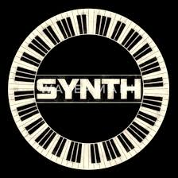

- One Day, The Creator Of Synth Was Bored (He Had Covid At This Time) So He Went On Youtube And Asked "how make bot" And A FCC/Free Code Camp Vid Popped Up, He Started There, Although He Didnt Finish..
- His Friend Asked If He Needed Help, He Said "NO" And Started Coding More, Later On That Week He Started Having Trouble With The Bot That Started Out With The Name, "Pedal" And So He Asked A Guy Named 'ayes' And Ayes Invited Him To a Discord GC And Now Synth Is Here. "Even The Smallest Bit Of Help Can Do Alot"- Synths Creator
- Following Through The Life Of Synth, He Had A Bot Buddy AKA Troller Bot 2000, A Bot Coded By The Same Guy That Made Synth, But All It Does Is Troll.
- Synth Is A Bot About Music And Coding The Bot Specifies Mainly Coding With Some Memes Here And There, The Memes Are User Suggested (will come later in future) While The Owner Codes, His Bot Gets Slightly More Active, The Bot is Built With discord.py In VS CODE.
- Synth Does Have Some Issues Here And There But If There Is Any Issues Just Ping @Terrence#6960 In #🔎・help-and-info In Synths Lab, The Main Support Server For Synth.